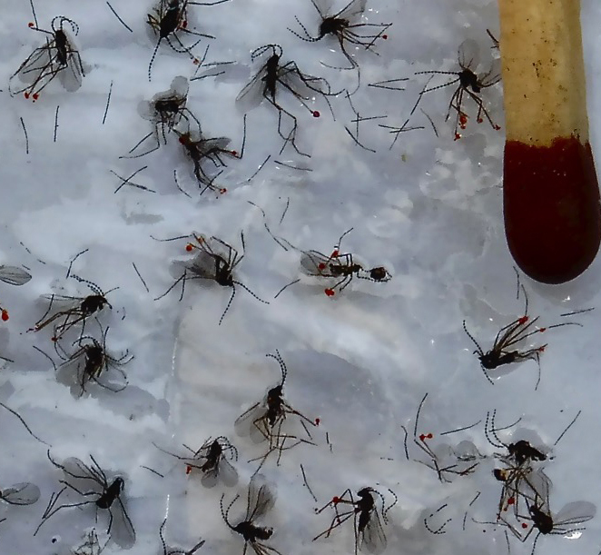
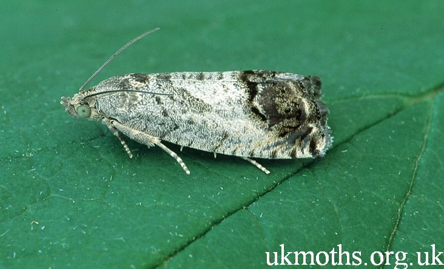

ÚJ TERMÉKEINK
S. frugiperda bagolylepke
Az eredetileg Amerikában honos kártevőt az évek során behurcolták Afrikába, ahonnan tovább terjedve ma már komoly károkat okoz Indiában és Kínában, valamint Ausztráliában is jelen van.
Javasolt csapdatípus: VARL+
Rendelhető: 2022-től
Szilva levélbolha

A European stone fruit yellows (ESFY) betegség fitoplazmáját terjeszti egyik növényről a másikra. Magyarországon egyre növekszik a fitoplazmával fertőzőtt kajszi és más gyümölcsösök száma.
Javasolt csapdatípus: SZf/10
Rendelhető: 2021-től
Repcebecő gubacsszúnyog
A repce és más keresztesvirágú haszonnövények Európa szerte előforduló, fontos kártevője. A csapda csalétke nem feromon, hanem táplálkozási attraktáns, nőstényeket és hímeket is csalogat.
Javasolt csapdatípus: RAG
Rendelhető: 2021-től
Karcsúdíszbogár fajok
Az egyes fajok szűk tápnövény körrel rendelkeznek. A lárvák élő növényi szövetekben, a fák vagy bokrok kérgében fejlődnek.
Javasolt csapdatípus: MULTz
Rendelhető: 2021-től
Káposztabolha fajok
A káposztaféléken, retken, repcén károsító káposztabolha fajokat egyaránt jól fogja. A Ph. vittula egyszikűeken károsító populációi is foghatók.
Javasolt csapdatípus: KLP+
Rendelhető: 2006-tól
VARs+ csapda
Új, egyszerűsített modell A korábbi VARs+ csapdatípus alapján új csapdaalak modellt fejlesztettünk ki, az egyszerűbb összeszerelés és kezelhetőség érdekében.
Rendelhető: 2018-tól
Selyemfényű puszpángmoly
Cydalima perspectalis A puszpáng (Buxus) fajokon károsító, eredetileg Kelet-Ázsiában, honos, invazív kártevő 2010-ben jelent meg hazánkban, 2016-ra eljutott a legkeletibb megyékig is.
Javasolt csapdatípus: VARL
Rendelhető: 2017-től
S. exigua bagolylepke
Spodoptera exigua (=apró jegyes bagolylepke) Az igen széles tápnövénykörű faj világkártevő, Eurázsiában, Amerikában, Afrikában és Auszrália egyes részein fordul elő. Hazánkban 2016-ig még nem észlelték.
Javasolt csapdatípus: VARL+
Rendelhető: 2017-től
S. littoralis bagolylepke
Spodoptera littoralis (=trópusi lápi bagolylepke) A faj elterjedt a Közel Keleten és Afrikában, Európában egyes déli országokban fordul elő. Igen polifág, számos haszonnövény kártevője. Hazánkban 2016-ig még nem észlelték.
Javasolt csapdatípus: VARL+
Rendelhető: 2017-től
Karcsúdíszbogár fajok
Az egyes fajok szűk tápnövény körrel rendelkeznek. A lárvák élő növényi szövetekben, a fák vagy bokrok kérgében fejlődnek.
Javasolt csapdatípus: MULTz
Rendelhető: 2021-től
Káposztabolha fajok
A káposztaféléken, retken, repcén károsító káposztabolha fajokat egyaránt jól fogja. A Ph. vittula egyszikűeken károsító populációi is foghatók.
Javasolt csapdatípus: KLP+
Rendelhető: 2006-tól
VARs+ csapda
Új, egyszerűsített modell A korábbi VARs+ csapdatípus alapján új csapdaalak modellt fejlesztettünk ki, az egyszerűbb összeszerelés és kezelhetőség érdekében.
Rendelhető: 2018-tól
Tavaszi (v. kis) káposztalégy
A káposztafélék és más keresztesvirágú haszonnövények fontos kártevője. A csapda csalétke nem feromon, hanem táplálkozási attraktáns, nőstényeket és hímeket is csalogat.
Javasolt csapdatípus: KLP+
Rendelhető: 2017-től
Kukoricamoly BISZEX csapda
A CSALOMON® kukoricamoly "BISZEX" csapda csalétke NEM feromon, hanem táplálkozási attraktáns, emiatt a csapda nőstényeket és hímeket is fog.
Javasolt csapdatípus: VARL+
Rendelhető: 2016-tól
Homoktövis-légy
Az eredetileg Szibériában, Oroszországban elterjedt kártevő súlyos károkat okoz Észak-Európai homoktövis ültetvényeiben. Hazánkban 2015-ig még nem észlelték, de megjelenésére számítanunk kell.
Javasolt csapdatípus: PALz
Rendelhető: 2016-tól